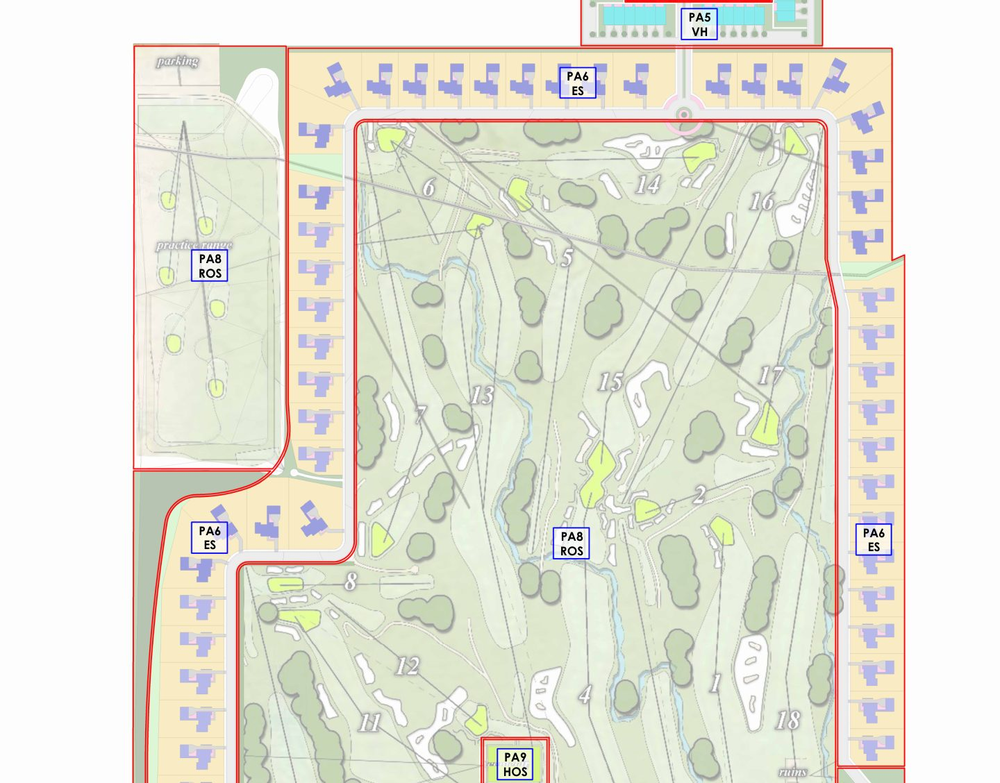
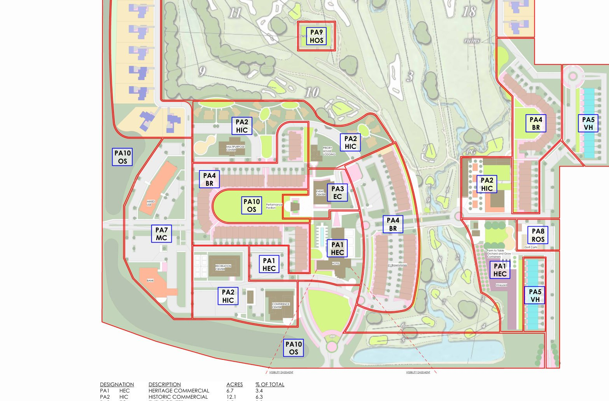

Unbridled · Private · Jonathan only
Jonathan, this is Stan and Lindsay publishing one note for you before you sit with them in Cañon City. Both halves are in. Same URL if either of us adds.
They took a large liquidity event. They are the other serious local capital in town besides us. Josh is being launched into a family office that will do land development, and they do not yet know which way it goes. Capital preservation is the thread. They have a wealth manager. He is a close friend of John Paul’s. They vacation together. Stan told them we are not here to interrupt that. Jonathan is one of the top ultra-wealthy advisers in the country, and he is available for advice and whiteboarding. John Paul Ary is still the one who wants the detailed whiteboard session. He has been asking Stan for years. He has said, more than once, this is not that session. Now is the time. Trust is built. Open it up.
Son. Heir. Leading. Family office will sit with him. Land, Abbey, development. Young second generation.
Sarah’s husband. Works alongside Josh. Likely in the room.
Getting less active. Still the relationship. Still the one who wants the detailed whiteboard session. CEO of Ary Corporation before the sale. Succeeded his father. Huge fan of Unbridled. Codes to the Abbey buildings are with Stan. Anytime we want to walk it and give advice, that is the relationship.
Two civil outfits did the heavy work in this valley. Roads, bridges, quarries. Ary Corporation and Tezak. John Paul inherited Ary and ran it. They sold. Stan’s read of why, in John Paul’s words: RFPs, sustainability rules, the whole compliance stack was getting too tenuous. They took money off the table.
Stan does not have a sale price. His language is hundreds of millions, and probably the biggest sale in Cañon City history. Treat that as flavor, not a number you quote.
Pit & Quarry, 23 July 2024. Third-generation, family-owned, Cañon City. Deal included 25 sand and gravel locations, five fixed asphalt plants, two portable asphalt plants, nine ready-mix plants, plus paving and construction services. Price was not published. Timing matches “about two years ago” from where we sit in August 2026.
A&S Construction / Ary Corp sat at 839 MacKenzie Ave. arycorp.com. John Paul and Josh both show up in the old city-bid record as owners of that shop.
Entity map after the sale is fuzzy. They have talked about more than one structure. Stan cannot draw it. Worth asking, gently. Besides Unbridled, they are the other major player in Cañon actually investing, developing, and talking like the town has a future.
Largest real estate holder on Main Street. We are second in terms of the future.
They want Josh activated to build and develop. That is the point of the family office.
About 190 acres. The February 24, 2026 master plan sheet totals 192.3 acres. Stan has the plans. The Abbey is also in an Opportunity Zone. That sits next to the historic credits, not instead of them.


Full 36x48 master plan PDF · Feb 24 2026. Acreage table on the sheet: heritage commercial 6.7, historic commercial 12.1, event center 1.5, brownstones 14.4, village homes 9.1, estate homes 30.6, mixed-use commercial 5.5, recreational open space 92.1, heritage open space 0.6, open space 19.7. Total 192.3.
Golf, driving range, hotel, event center (probably two event spaces), some retail. The plan Stan saw has an 18-hole course plus an executive course. In a town this size, an executive course next to a full course feels useless to him.
When Josh feels insecure he talks commercial. That is the language he knows. Stan does not think they are getting good advice from their planners.
Daily Record / Denver Post, 20 Jan 2025. “The John Paul Ary families” closed two weeks prior. Josh: keep it local, improve the community, family legacy, could take up to a year to decide use. An out-of-state buyer had it under contract, got entitlements, could not close. Three letters of intent. Ary won. FEDC (Rob Brown) is in the mix.
Stan’s read on cost: the Abbey acquisition is tenuous. They are not getting good architectural or design advice. He wishes they were.
Inside the historic Abbey. About 70 rooms. About $30 million to renovate. Adjacent event center designed for weddings is already underway. He has put a couple million into that. Across the lawn, an old barn that would be remodeled and sit with the hotel. Partnered with Hotel St. Cloud. Two historic properties.
John Paul does not want to operate it. He wants us to build and run, or run, the hotel and event center.
His high-risk model, the one he likes: cut a deal on the rent, then take 2% to 10% of revenue. His line: as you grow, we all grow. That could be the hotel conversation. It still does not pencil unless the tax credits get maximized.
Abbey underwriting base case (21 Aug 2026), St. Cloud chart of accounts, land owned. 70 keys, 60% occupancy, $250 ADR, $300k/month F&B, 65% prime, $30M build, $21M permanent at 7% / 25 years. This case does not cash flow the note.
Stan told them the federal piece is worth about $6 million on the hotel. That is roughly 20% of the $30M reno. Our model is more conservative: federal is 20% of $22M QRE = $4.4M, claimed over five years as an income-tax offset, not a deposit. State is modeled at $3.0M at 93 cents = $2.79M cash at close. Credits do not count in DSCR. They do not service the bank.
Their comeback: you have to make money for that to happen. That is the tell. They are thinking of the federal credit as something you use against profit, which is true if you keep it. They have not been walked through syndication.
Full model (private): offers.hotelstcloud.com/assets/abbey-hotel-underwriting
They asked Stan about putting the hotel in a nonprofit. Tax incentives, benefits. Someone has also talked to them about putting everything in a nonprofit. They will float whether the hotel could sit in a nonprofit and then go hunt grants, given two historic properties.
That is your conversation, not a yes from this page. Flag it. Historic credits, grants, and a 501(c)(3) operating a hotel are three different machines. Mixing them is how people lose both the credit and the operating story.
Second-generation business. Young. Liquidity event. Family office forming around Josh. Capital preservation is the key component Stan heard. Land development is the activity. They just do not know which way the land goes.
Close friend of John Paul’s. They vacation together. That relationship stays. Stan made sure they heard we are not trying to interrupt it. Jonathan is one of the top ultra-wealthy advisers in the country. He is available for advice and whiteboarding. That is the offer. Not a replacement.
John Paul Ary is still the one who wants the detailed whiteboard session. He has wanted Stan to do that for years. He often says this is not that session. They slow-played it. Now he is opening up. Moral of the story: he has built trust with us.
He likes bourbon. He almost bought into 6th String. Specifically Blanton’s Gold. The bar in the new office is just getting finished. First bottle in that bar would land. If you want to bring one, Stan will pay for it or run it through Wealth.
Huge fans of Unbridled. Huge friends of the hotel.
Lindsay, on the ground in Cañon. This is locked from her, not from Stan’s sketch.
They are in St. Cloud often. Strong opinions on food and service, and they will tell you.
Works remote. Nick works alongside Josh. Three kids.
Stay-at-home mom. Two kids. Cooper works for Ary. JP will not sell Standard Oil because he promised Sammy he would not.
Works alongside Nick. Heir. The one being launched into the family office.
Lawyer in Colorado Springs. She and her husband do not have kids yet.
He earned his living. Can seem mean and aggressive. Dry sense of humor. At his core, a girl dad.
Real estate is packaged under JP Ary Properties. Lindsay’s read: they have never been walked through a money-flow process. They seem gun shy around being the actual operators. Same pattern on the Abbey and the event center, and on the Lagree grocery going into the old Office Depot.
Happy with what Unbridled has done on Main. Loud about how much they do not like the train and the ownership over there.